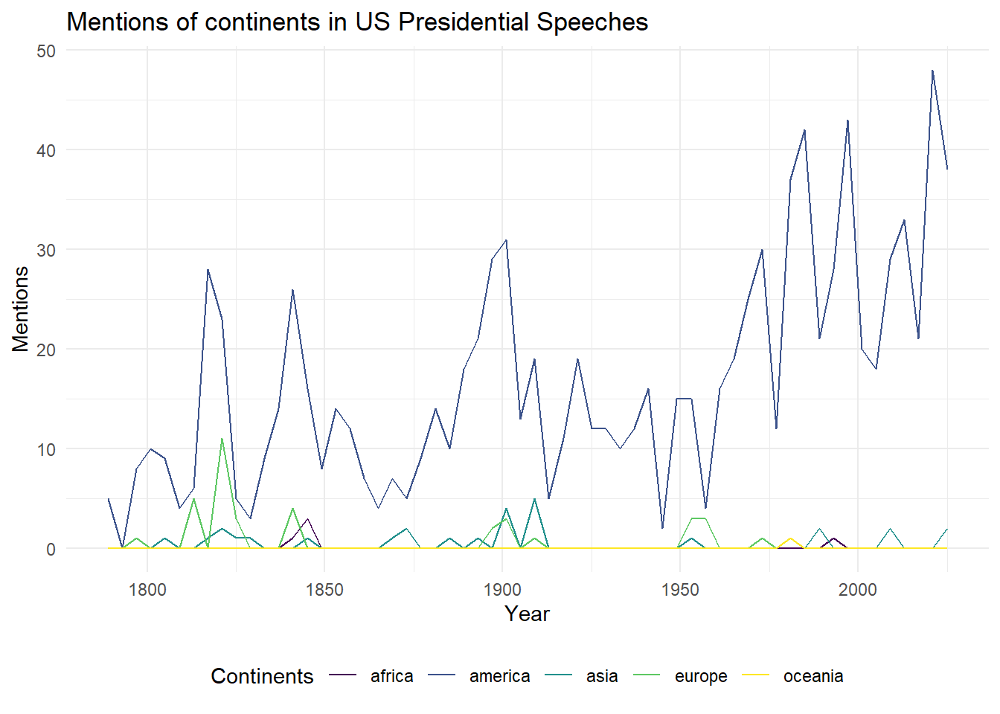
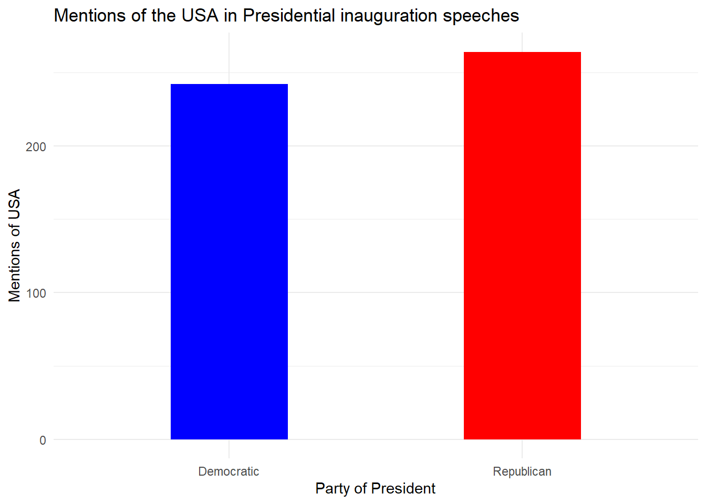

Until now, the lab assignments have been mostly disjointed tasks that were designed to have you play with different functions, get familiar with R and quanteda, and just “get your hands dirty” with data. From this week on, we are shifting more to (small) research/analysis tasks you may do in a paper. This means that handling variables correctly and building a cohesive script starts mattering more. From this assignment onwards, here are some guidelines I want you to reflect. These guidelines will also be part of the grading:
You will occasionally need to install new packages (this should be clear from the task) and do other “management” tasks. Please do those from the console rather than the script.
Always save changes made to datasets in a variable. I leave it up to you when you overwrite old variables and when you create new ones, but a good rule of thumb is: “Save the raw data in its own variable, and then create a new variable every time you assume you will still need the old version of the dataset”. That is, it’s usually not ideal to make a new variable if you just add a column, but if you reshape a corpus or subset it, you may want to do so.
You will increasingly have to make multiple steps at once. You don’t have to show results for every step, but write functional code for the entire workflow. Use comments to structure your code as you think it is required.
library(tidyverse)
── Attaching core tidyverse packages ──────────────────────── tidyverse 2.0.0 ──
✔ dplyr 1.2.1 ✔ readr 2.2.0
✔ forcats 1.0.1 ✔ stringr 1.6.0
✔ ggplot2 4.0.3 ✔ tibble 3.3.1
✔ lubridate 1.9.5 ✔ tidyr 1.3.2
✔ purrr 1.2.2
── Conflicts ────────────────────────────────────────── tidyverse_conflicts() ──
✖ dplyr::filter() masks stats::filter()
✖ dplyr::lag() masks stats::lag()
ℹ Use the conflicted package (<http://conflicted.r-lib.org/>) to force all conflicts to become errors
library(quanteda)
Package version: 4.5.1
Unicode version: 15.1
ICU version: 74.1
Parallel computing: 28 of 28 threads used.
See https://quanteda.io for tutorials and examples.
speeches <- data_corpus_inaugural
Part 1: The Dictionary
For this task, we use the Newsmap dictionary, which has the names of nations, their demonyms, and key cities to detect mentions of countries. Install the “newsmap” package, and find the command to save the English version of the dictionary to a variable called “dict_nations”. Call str(dict_nations)from the console and take a look at the dictionary.
dict_nations <- newsmap::data_dictionary_newsmap_en# You could also use library(newsmap). But as we only use this package once in the project, explicitly calling it with :: can be easier.
This is a nested dictionary, i.e. its keys (countries) are grouped on multiple levels (regions and continents). From an R perspective, it is a list of lists. Let’s look at Europe as an example: Within the list that makes up the overall object, there is a list called “EUROPE”. This list contains four lists called “EAST”, “NORTH”, “SOUTH”, and “WEST”, corresponding to the four regions of Europe. The sublist EUROPE-WEST contains 9 character vectors, each named after a country’s two-letter-code.
Within a list, we can call each entry by putting its name into double square brackets. As an example, if we want to look up the contents of the sublist “EUROPE”, we can use dict_nations[["EUROPE"]]. We can also combine multiple such calls: dict_nations[["EUROPE"]][["NORTH"]] would show us the entries for Northern Europe only. We can also call functions using this syntax: length() would show us the number of entries, names() shows the names of entries, etc.
For each continent, print the names of the regions within it.
names(dict_nations[["ASIA"]])
[1] "CENTER" "EAST" "SOUTH" "SOUTH-EAST" "WEST"
names(dict_nations[["AFRICA"]])
[1] "EAST" "MIDDLE" "NORTH" "SOUTH" "WEST"
names(dict_nations[["AMERICA"]])
[1] "CARIB" "CENTER" "SOUTH" "NORTH"
names(dict_nations[["EUROPE"]])
[1] "EAST" "NORTH" "SOUTH" "WEST"
names(dict_nations[["OCEANIA"]])
[1] "AU-NZ" "MEL" "MIC" "POL"
# More elegant solution using loops (I don't expect you to know this unless you have prior experience, but you may encounter it every now and then):for(i in dict_nations){print(names(i))}
Part 2: Looking up Continents in Presidential Speeches
Load the presidential speeches corpus we worked with last week, and tokenize it. Remove all punctuation and stopwords, and convert all tokens to lower case. You do not need to show any results for this step - raw code is fine.
toks_lookup() replaces tokens that are in the dictionary with the corresponding dictionary key. With a nested dictionary, you can use the levels argument in toks_lookup() to access the desired level of the nesting. Apply the dictionary to the tokenized speeches, convert the results to a DFM, and print the total number of mentions each continent gets (hint: this corresponds to the column sums of the DFM).
Group the DFM you created by year (using quanteda’s dfm_group() function) and convert it to a dataframe. Pivot it to long form, so that every combination of year and continent is its own row. Create a new variable called “year” that expresses the doc_id variable as a number using as.numeric(). Create a line plot that shows the mentions of each continent over time.
# Let's beautify this a bit! (This is mostly optional, but it is good practice for papers)cont_plot <- cont_plot +#Next command: Adding labelslabs(x ="Year", y ="Mentions",col ="Continents") +ggtitle("Mentions of continents in US Presidential Speeches") +scale_color_discrete(palette ="viridis") +#Change colour scheme to be more colorblind-friendlytheme_minimal() +#Changing the theme to my favouritetheme(legend.position ="bottom") #Putting the legend at the bottomcont_plot

Part 3: Mentions of the USA
If you look at the mentions of American countries, you notice an up-and-down pattern after World War 2 (from 1946 onwards). This pattern alternates almost perfectly - does it perhaps reflect differences between Democratic and Republican presidents? Let’s analyse this:
Subset the corpus to only those speeches held from 1946 onward. Tokenize them and apply the dictionary on the national level and create a DFM. Then, group the DFM by party and convert it to a dataframe. Filter the dataframe to only include mentions of the USA and print it.
Create a bar plot showing mentions of the USA in inaugural speeches, separated by party. Interpret the results.
For this task, you need to use the “stat” argument. This argument tells ggPlot which statistical value it should use. Most geoms default to just using the numbers provided (this is called “identity”). However, geom_bar() defaults to the “count” stat, which shows the number of rows for which each value of the x-axis occurs. This breaks if we explicitly provide two axes, so we need to set “stat = identity”.
ggplot(us_party) +geom_bar(aes(x = doc_id,y = america.north.us,fill = doc_id), #fill is not strictly needed, but it does look prettierstat ="identity",width = .4) +labs(title ="Mentions of the USA in Presidential inauguration speeches",x ="Party of President",y ="Mentions of USA") +scale_fill_manual(values =c("blue", "red")) +theme_minimal() +theme(legend.position ="none")

Some beautification notes I like:
fill = doc_id gives the bars different colours depending on their doc_id (similar to how we used “col = continent” before).
width = 0.4 sets a specific width for the bars. I chose a narrower width so we get neat bars instead of massive, wide blocks. If you wanted, you could also tie width to the value of a variable by calling it inside “aes”, just as we did with “col” and “fill”. You rarely do this in bar plots, but in scatter plots (geom_point()) this is a common way to indicate things like sample size.
scale_fill_manual allows us to provide specific colours we would like to use for the “fill” argument used above. There are a lot of things you can do with this - if you just provide a colour vector like I did, it will apply those colours in the order in which the values in the variable “fill” takes occur.
theme_minimal() adds the “minimal” theme, which has barely any background. I think minimal looks the cleanest, but there are many options - and options to add more using the “ggthemes” package and similar packages (you could even make your own, but please don’t ask me how!)
theme() offers many options to adjust the theme. Common ones are the legend position, which I used here, the font size, angling text to fit better onto a graph, etc. Important: If you change the theme, theme() always has to be called after the new theme has been set, or any changes will be overwritten (as setting a theme basically just makes a number of explicit calls to theme() wrapped in one command)